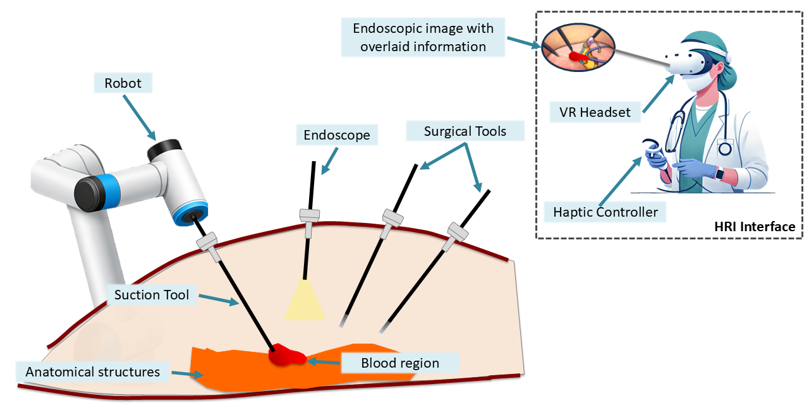

Abstract
This work presents the design and implementation of an autonomous robotic aspirator capable of detecting and removing intraoperative bleeding without continuous human intervention.
Key Contributions
Unified Framework
A unified framework for autonomous surgical blood aspiration integrating perception, task planning, control, and mixed-reality supervision.
Suction Strategies
A comparative analysis of four centroid-based target selection strategies for blood aspiration.
Geometric Evaluation
A geometric evaluation of pairwise target discrepancies and their relationship with robotic performance.
Experimental Validation
Extensive in vitro validation under representative bleeding scenarios, revealing scenario-dependent behavior and trade-offs.


Results
Robotic Aspirator Performance
Blood segmentation in surgical images
Citation
@article{gongora2026aspirator,
title={Autonomous Surgical Robotic Aspirator},
year={2026}
}